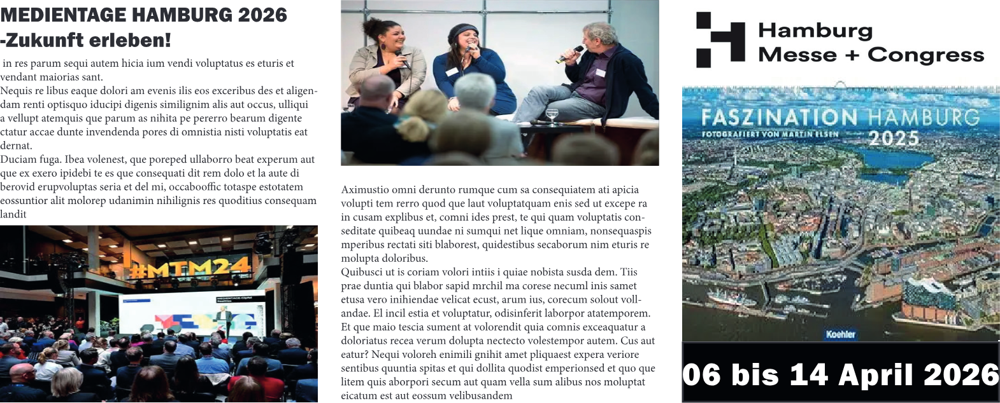
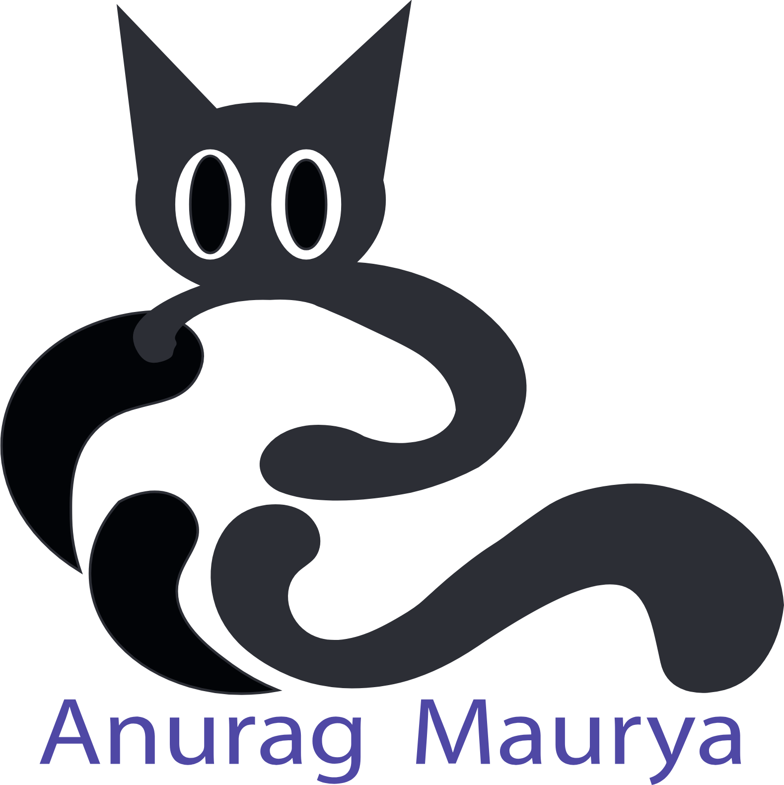
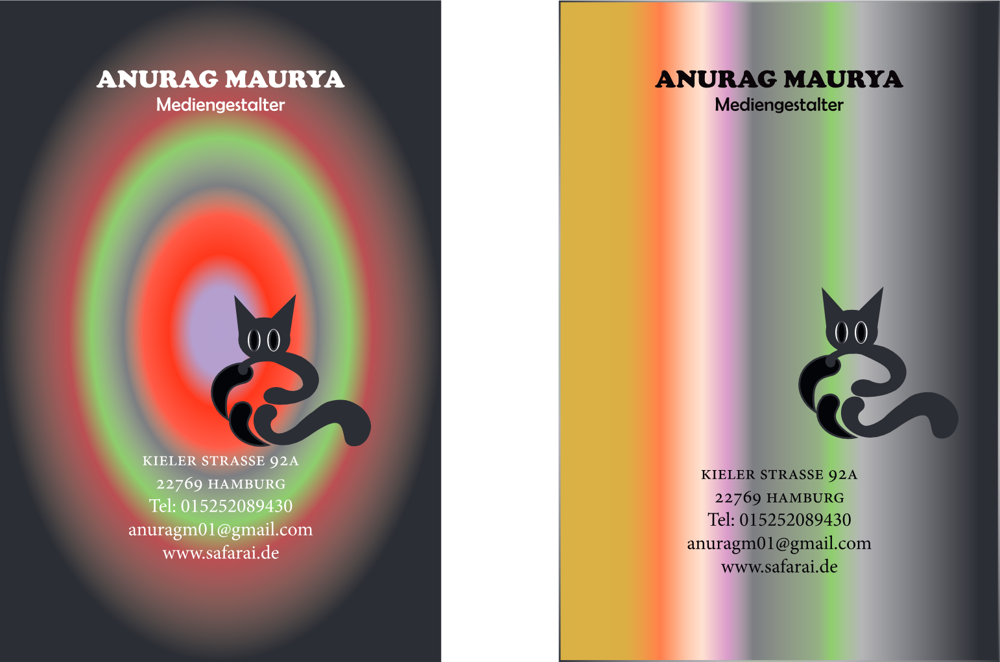
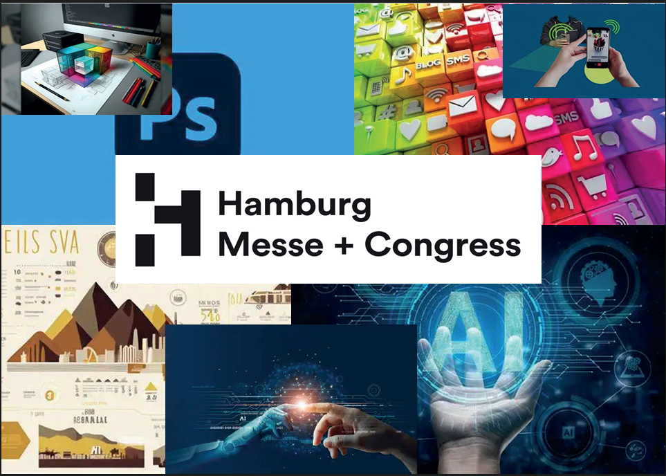
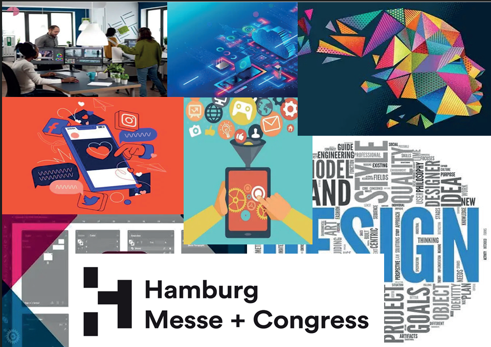
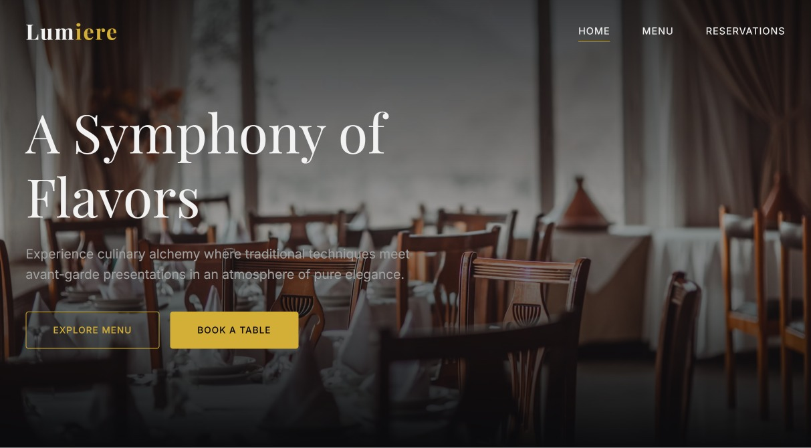
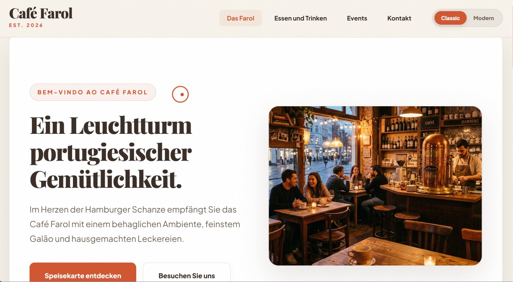

01 / EDITORIAL / PRINTStudienkonzept · Macromedia · 2026

ARBEIT ANSEHEN ↗
01Medientage Hamburg 2026
Publikations- und Veranstaltungskonzept
Ein Konzept für Veranstaltungsidentität und Editorial-Publikation zu den Hamburger Medientagen. Im Mittelpunkt stehen modulare Raster und kontrastreiche Typografie.
Adobe InDesignEditorial-LayoutTypografie
02 / MARKENIDENTITÄTEigenständige Studie · Macromedia · 2026

ARBEIT ANSEHEN ↗
02Safarai — Bildmarke
Vektorzeichen und Identitätsstudie
Eine geometrische Bildmarke, die organische Bewegung, präzise Kurven und zeitgemäßen Minimalismus verbindet.
Adobe IllustratorVektorkonstruktionIdentität
03 / PRINT & GESCHÄFTSAUSSTATTUNGEigenständige Studie · Macromedia · 2026

ARBEIT ANSEHEN ↗
03Safarai — Geschäftsausstattung
Visitenkarten-Layout und Mock-up
Eine Studie zur Geschäftsausstattung mit dunklen, kontrastreichen Karton-Mock-ups und verfeinerter Serifentypografie.
Adobe InDesignAdobe PhotoshopPrint-Layout
04 / HAMBURG MESSE + CONGRESS / MEDIENPortfolio-Studie

ARBEIT ANSEHEN ↗
04Hamburg Messe + Congress — Medienkonzepte
Visuelle Recherche für Medien und Events
Eine visuelle Recherchetafel, die Print, Social Media, Eventidentität und neue Technologien für Hamburg Messe + Congress zusammenführt.
Visuelle RechercheEventmedienMoodboard
05 / HAMBURG MESSE + CONGRESS / GESTALTUNGPortfolio-Studie

ARBEIT ANSEHEN ↗
05Hamburg Messe + Congress — Gestaltungskonzepte
Recherche zu Design und Kommunikation
Eine zweite Erkundung von Gestaltungs- und Kommunikationsrichtungen, die Grafikdesign, digitale Oberflächen und Social-Media-Referenzen verbindet.
Visuelle RechercheDigitales DesignMoodboard
06 / GASTRONOMIE / WEBKONZEPTPortfolio-Studie

ARBEIT ANSEHEN ↗
06Lumiere — Restaurant-Website
Konzept für eine Restaurant-Startseite
Ein Konzept für eine Restaurant-Startseite mit atmosphärischer Fotografie, eleganter Serifentypografie und klaren Wegen zur Speisekarte und Reservierung.
WebdesignArt DirectionTypografie
07 / GASTRONOMIE / WEBKONZEPTPortfolio-Studie

ARBEIT ANSEHEN ↗
07Café Farol — Website
Konzept für eine Café-Startseite
Ein Konzept für eine Café-Startseite mit warmer Innenraumfotografie, prägnanter Editorial-Typografie und einer einladenden Einführung.
WebdesignArt DirectionTypografie